전자캐드기능사 (2006-10-01 기출문제)
1과목: 전기전자공학(대략구분)
1. 발진회로에서 주파수 체배기의 역할은?
- 주파수를 정수배로 낮춤
- 주파수를 정수배로 높임
- 신호의 왜곡을 제거
- 신호의 잡음을 제거
(정답률: 42%)

2. 다음 중 트랜지스터의 바이어스 안정도 S가 어떤 값일 때 가장 좋은가?
- 10.3
- 8.35
- 13
- 3.1
(정답률: 33%)
3. e=100 sin ω t [V]로 표시되는 전압의 실효값[V]은?
- 100
- 50√2
- 50
- 60
(정답률: 62%)
4. 이미터 접지 증폭기 회로에서 출력 컨덕턴스를 나타내는 기호는?
- hoe
- hie
- hre
- hfe
(정답률: 38%)
5. 아래 그림과 같은 V-I 특성을 나타내는 스위칭 소자는?
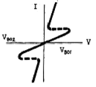
- SCR
- DIAC
- 터널 Diode
- UJT
(정답률: 44%)
6. 도체에 전류 i가 흐를 때 도체 주위의 한점 P에 생기는 자장의 세기는 도전 전류의 각 미소 부분에 생기는 자장의 세기의 합이라는 법칙은?
- 시타인 메쯔의 법칙
- 렌츠의 법칙
- 비오-사바르의 법칙
- 주회 적분의 법칙
(정답률: 65%)
7. 최대주파수 편이 △fc가 65[㎑], 변조 신호주파수 fs가 6.5[㎑]이면 변조지수 mf는 얼마인가?
- 0.1
- 10
- 65
- 100
(정답률: 58%)
8. 그림과 같은 회로에 100[V] 전압을 가하면 축적되는 전하가 250[μC]였다. C의 정전용량은 몇 [㎌]인가?
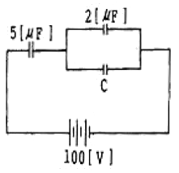
- 1[μF]
- 2[μF]
- 3[μF]
- 4[μF]
(정답률: 56%)
9. 다음 회로에서 합성 인덕턴스는?
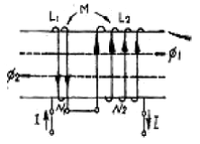
- L1+L2+2M
- L1+L2-2M
- L1÷L2÷2M
- L1×L2×2M
(정답률: 54%)
10. 같은 전지 n개를 병렬로 연결할 시 사용할 수 있는 전력이 최대일 때, 부하저항은 전지 1개 내부저항의 몇 배인가?
- 1
- 1/n
- n
- n2
(정답률: 64%)
11. T 플립플롭의 설명으로 틀린 것은?
- 클럭 펄스가 가해질 때마다 출력상태가 반전한다.
- 출력파형의 주파수는 입력주파수의 1/2이 되기 때문에 1/2 분주회로 및 계수회로에 사용된다.
- JK플립플롭의 두 입력을 묶어서 하나의 입력으로 만든 것이다.
- 어떤 데이터의 일시적인 보존이나 디지털신호의 지연작용 등의 목적으로 사용되는 회로이다.
(정답률: 54%)
12. 다음 회로가 콜피츠 발진회로인 경우 각 임피던스의 소자를 알맞게 선택한 것은?
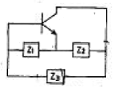
- Z1 : C1, Z2 : C2, Z3 : C3
- Z1 : C1, Z2 : C2, Z3 : L
- Z1 : L1, Z2 : L2, Z3 : C
- Z1 : L1, Z2 : L2, Z3 : L3
(정답률: 49%)
13. Vc=30cos ω˛t[V]의 반송파를 Vs=10cospt[V]의 신호파로 진폭변조했을 때, 변조도는 약 몇 [%]인가?
- 25
- 33.3
- 50
- 300
(정답률: 57%)
14. 다음 중 자속 밀도의 단위는?
- [㏝]
- [㏝/m]
- [㏝/m2]
- [㏝/m3]
(정답률: 57%)
15. 5[Wh]는 몇 [J]인가?
- 3600
- 7200
- 18000
- 41860
(정답률: 53%)
2과목: 전자계산기일반(대략구분)
16. 마이크로프로세서의 발달로 중앙처리장치와 주기억장치의 속도 차이가 커지고 있다. 이를 해소하기 위해 사용하며, 특히 그래픽 처리시 속도를 높이는 결정적인 역할을 하기도 하는 메모리이다. 주기억장치보다 속도가 5~10배 빠르며, 소용량인 메모리를 무엇이라 하는가?
- 주기억장치
- 보조기억장치
- 롬
- 캐시기억장치
(정답률: 75%)
17. 입력되는 자료를 일정기간, 일정량을 저장한 다음 한꺼번에 처리하는 방식은?
- 온라인 방식
- 오프라인 방식
- 배치 처리 방식
- 실시간 처리 방식
(정답률: 63%)
18. 마이크로프로세서의 구성 요소가 아닌 것은?
- 누산기
- 연산장치
- 입력장치
- 레지스터
(정답률: 50%)
19. 컴퓨터에서 2kbyte의 크기를 정확히 나타낸 것으로 옳은 것은?
- 512byte
- 1024byte
- 2048byte
- 4096byte
(정답률: 82%)
20. 다음 그림의 연산 결과를 올바르게 나타낸 것은?
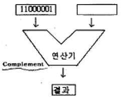
- 11000001
- 00111110
- 00111111
- 10000011
(정답률: 72%)
21. 잘못된 정보를 패리티체크에 의해 착오를 검출하고, 이를 교정할 수 있는 코드는?
- 아스키 코드
- 해밍 코드
- 그레이 코드
- EBCDIC
(정답률: 61%)
22. 중앙처리장치를 크게 두 부분으로 분류하면?
- 연산장치와 기억장치
- 제어장치와 기억장치
- 연산장치와 논리장치
- 연산장치와 제어장치
(정답률: 68%)
23. 전자계산기에서의 알고리즘(algorithm)의 설명으로 가장 올바른 것은?
- 순서도의 작성 과정
- 문제 원인을 파악하는 일
- 프로그램의 작성과 오류 수정
- 문제를 해결하기 위해 차례로 나열한 풀이 과정
(정답률: 49%)
24. 주기억장치의 일부분으로서 서브루틴을 호출할 경우 복귀할 주소를 기억하는 것으로, 후입선출(LIFO)의 형식을 사용하는 것은?
- SKIP
- STACK
- BRANCH
- PROTOCOL
(정답률: 83%)
25. 마이크로프로세서의 CPU 모듈 동작 순서를 바르게 나열한 것은?
- 명령어 인출→데이터 인출→명령어 해석→데이터처리
- 데이터 인출→명령어 인출→명령어 해석→데이터처리
- 명령어 인출→명령어 해석→데이터 인출→데이터처리
- 데이터처리→데이터 인출→명령어 해석→명령어 인출
(정답률: 66%)
26. 문자를 삽입할 때 필요한 연산은?
- OR 연산
- ROTATE 연산
- AND 연산
- MOVE 연산
(정답률: 49%)
27. 다음 중 순서도를 작성하는 방법으로 옳지 않은 것은?
- 처리순서의 방향은 위에서 아래로, 오른쪽에서 왼쪽 화살표로 표시한다.
- 국제 표준화 기구에서 정한 표준 규격을 사용한다.
- 처리과정을 간단 명료하게 표시한다.
- 순서도가 길거나 복잡할 경우 기능별로 분할한 후 연결 기호를 사용하여 연결한다.
(정답률: 75%)
28. 다음 특수 반도체 소자의 기호 명칭은?
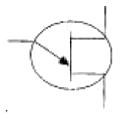
- 다이액(DIAC)
- 트랜지스터(TR)
- 트라이액(TRIAC)
- 단일 접합 트랜지스터(UJT)
(정답률: 66%)
29. 다음의 도면 종류 중에서 분류 방법이 다른 것은?
- 회로도
- 승인도
- 부품도
- 조립도
(정답률: 64%)
30. 전자제도에서 장치와 장치 사이의 접속 상태나 기능을 알아보기 쉽게 하기 위해 도면에 기호나 실제의 모양을 배치하고, 이들 사이를 연결한 도면을 무엇이라고 하는가?
- 접속도
- 부품 배치도
- 패턴도
- 블록 다이어그램
(정답률: 48%)
3과목: 전자제도(CAD) 이론(대략구분)
31. 인쇄회로기관(PCB) 설계용 CAD에서 일반적인 배선 알고리즘이 아닌 것은?
- 스트립 접속법
- 고속 라인법
- 기하학적 탐사법
- 인공지능 탐사법
(정답률: 72%)
32. 한쪽 방향으로만 전류를 통과시켜 교류를 직류로 바꾸는 소자는?
- 다이오드
- 트랜지스터
- 전해 콘덴서
- 전기장 효과 트랜지스터
(정답률: 68%)
33. 전자부품 기호 중 실리콘 제어 정류소자(SCR)의 기호는?
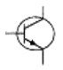
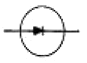
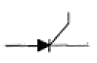
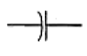
(정답률: 72%)
34. 노이즈 대책용으로 사용될 콘덴서의 구비 조건과 거리가 먼 것은?
- 내압이 낮을 것
- 절연 저항이 클 것
- 주파수 특성이 양호할 것
- 자기공진 주파수가 높은 주파수 대역일 것
(정답률: 52%)
35. PCB 제조 공정에서 소정의 배선 패턴만 남기고 다른 부분의 패턴을 제거하는 공정은?
- 천공
- 패턴형성
- 에칭
- 도금
(정답률: 72%)
36. 다음의 기판 재질 중에서 내열성이 좋고, 다층 기판 제작에 용이하며, 플렉시블(Flexible : 휨이나 절곡)한 기판 제작에 많이 사용되는 것은?
- 페놀(Phenol) 수지
- 에폭지(Epoxy) 수지
- 폴리이미드 필름
- 테프론(Teflon)
(정답률: 55%)
37. 도면작성 후 PCB Artwork 또는 시뮬레이션을 하기 위해 부품 간의 연결 정보를 가지고 있는 데이터 파일이 생성되는데, 이 파일의 명칭은?
- Netlist
- Library
- Compoment
- Symbol
(정답률: 74%)
38. PCB 도면을 그래픽 출력장치로 인쇄할 경우 프린트 기판에 천공할 hole 크기 및 수량의 정보를 나타내는 것은?
- compoment side pattern
- drill data
- solder side pattern
- solder mask
(정답률: 61%)
39. 전기 신호의 중계, 제어 등을 행하는 기구 부품(electro-mechanical component)이 아닌 것은?
- 커넥터
- 소켓
- 스위치
- 다이오드
(정답률: 46%)
40. CAD 시스템에서 사용되는 좌표 중 거리와 각도로 위치를 나타내는 좌표계는?
- 절대 좌표계
- 상대 좌표계
- 극 좌표계
- 사용자 좌표계
(정답률: 62%)
41. CAD는 Computer Alded Design의 앞 글자 C.A.D를 따서 CAD라고 부른다. 이중 전자회로 설계 프로그램(Electric CAD)은 대부분 기존의 전기, 전자 정보를 갖고 있는 ( )를(을) 불러들여 전자회로 설계를 구성하게 된다. ( )안의 내용으로 옳은 것은?
- Library
- Though
- Refresh
- Locked
(정답률: 80%)
42. 「컴퓨터 지원 설계」의 약자로 옳은 것은?
- CAD
- CAM
- CAE
- CNC
(정답률: 79%)
43. 다음 그림과 같이 표현하는 도면 표시 방법은?
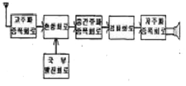
- 회로도
- 계통도
- 배선도
- 접속도
(정답률: 68%)
44. 그림이나 사진 등 화상 데이터를 입력하는 장치이며, 마이크로 컴퓨터 CAD에서는 손으로 그린 스케치 도면이나, 입력 또는 데이터의 호환성이 없는 시스템 사이에서 데이터의 교환 등에 사용되는 컴퓨터 입력장치는?
- 디지타이저
- 키보드
- 마우스
- 이미지 스캐너
(정답률: 61%)
45. 한국산업규격 분류기호 중에서 전기, 전자, 통신에 해당하는 것은?
- KS A
- KS B
- KS C
- KS D
(정답률: 85%)
46. 전자기기를 구성하는 부품은 그 기능적인 역할에 따라 수동 부품과 능동 부품으로 구분된다. 다음 중 능동 부품에 속하는 것은?
- 트랜지스터
- 저항기
- 유도기
- 용량기
(정답률: 74%)
47. 제도 용지에서 A3 용지의 규격으로 옳은 것은? (단, 단위는 ㎜)
- 210×297
- 297×420
- 420×594
- 594×841
(정답률: 76%)
48. 물체의 실체 길이와 도면에서 축소 또는 확대하여 그리는 길이의 비율을 척도라 하는데 실물보다 작게 그리는 척도는?
- 축척
- 실척
- 배척
- NS
(정답률: 85%)
49. PCB의 설계시 고주파 부품 및 노이즈에 대한 대책 방법으로 옳은 것은?
- 아날로그와 디지털 회로는 어스 라인을 통합한다.
- 부품을 세워 사용한다.
- 고주파 부품을 일반회로와 혼합하여 설계한다.
- 가급적 표면 실장형 부품(SMO)을 사용한다.
(정답률: 56%)
50. 트랜지스터에 2SC1815Y라고 씌어 있을 때 C가 의미하는 것은?
- PNP형 고주파용
- PNP형 저주파용
- NPN형 고주파용
- NPN형 저주파용
(정답률: 60%)
51. 다음 중 CAD용 컴퓨터의 데이터 버퍼에 대한 설명으로 옳은 것은?
- 출력작업이 이루어지는 동안에도 다른 작업을 행할 수 있다.
- 주변장치와 B BIT 병렬 데이터 통신을 하기 위한 인터페이스다.
- 사용자 정의 형상을 컴퓨터가 이해할 수 있는 수치로 나타낸다.
- 36핀 커넥터로 되어 있다.
(정답률: 53%)
52. 일반적으로 회로도를 설계할 때 고려해야 할 사항으로 거리가 먼 것은?
- 신호의 흐름은 도면의 왼쪽에서 오른쪽으로, 위에서 아래로 그린다.
- 주회로와 보조회로가 있는 경우에는 주회로를 중심으로 그린다.
- 수동 소자를 중심으로 그리고, 능동 소자는 회로의 외곽에 그린다.
- 대각선과 곡선은 가급적 피한다.
(정답률: 75%)
53. 다이오드 중 정전압 용도로 쓰이는 것은?
- 일반 다이오드
- 제너 다이오드
- 터널 다이오드
- 포토 다이오드
(정답률: 85%)
54. 일반적으로 도면 관리시 도면 번호를 기입하는 부분은?
- 부품란
- 윤곽선
- 표제란
- 드로잉 뒷면
(정답률: 76%)
55. 전자ㆍ통신용 기기의 부품 배치도를 그릴 때 고려하여야 할 사항 중 옳지 않은 것은?
- IC의 경우 1번 핀의 위치를 반드시 표시한다.
- PCB 기판의 점퍼선은 절대로 표시하지 않는다.
- 부품 상호간의 신호가 유도되지 않도록 한다.
- 부품의 종류, 기호, 용량, 핀의 위치, 극성 등을 표시하여야 한다.
(정답률: 73%)
56. 인쇄회로기판(PCB)를 사용하여 전자기기를 제작하였을 때 얻어지는 일반적인 특징 설명 중 옳지 않은 것은?
- 대량 생산의 효과가 높다.
- 제품의 균일성과 신뢰성이 높다.
- 회로의 특성이 안정화된다.
- 오배선의 우려가 많다.
(정답률: 84%)
57. 다음 중 디스플레이(display) 장치로 볼 수 없는 것은?
- 모니터
- 디지타이저
- LCD 모니터
- 비디오프로젝터
(정답률: 68%)
58. 인쇄회로기판(PCB)에서 부품의 단자 또는 도체 상호간을 접속하기 위해 구멍(Hole)의 주위에 만든 특정한 도체 부분이 납땜이 될 수 있도록 처리하는 것은?
- 실크스크린
- Drill(구멍 가공)
- 패턴
- 납 마스크
(정답률: 60%)
59. PCB Artwork에서 배선하는 과정을 나타내는 용어는?
- route
- Line
- hole
- point
(정답률: 54%)
60. 표준화 유형 중 기업 또는 공장에서 심의하고 규정하여 기업 또는 공장 내부에서 적용되는 표준은?
- 단체 표준
- 사내 표준
- 국가 표준
- 국제 표준
(정답률: 76%)